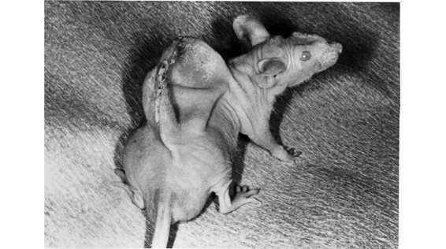
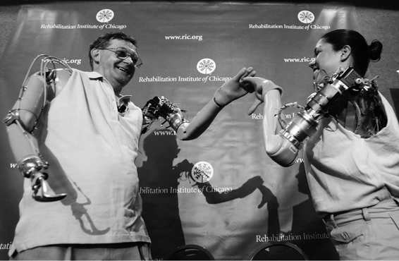

Kapitel 20
Das Ende des Homo sapiens
Zu Beginn dieses Buchs haben wir die Geschichte als nächsten Schritt im Kontinuum von der Physik zur Chemie zur Biologie kennengelernt. Da wir Menschen denselben physischen Kräften, chemischen Reaktionen und natürlichen Ausleseprozessen unterliegen wie alle anderen Lebewesen, werden letztlich auch unsere historischen Abenteuer von der Evolution gelenkt. Es mag sein, dass der Homo sapiens auf einem größeren Spielfeld agiert als jeder andere Organismus, doch auch dieses Spielfeld hat seine Grenzen. Trotz aller Anstrengungen und Leistungen konnten wir diese von der Biologie vorgegebenen Grenzen lange Zeit nicht überwinden.
Das hat sich geändert. Zu Beginn des 21. Jahrhunderts sprengt der Homo sapiens auch seine biologischen Grenzen, er lässt die Gesetze der natürlichen Auslese hinter sich und ersetzt sie durch die Regeln des intelligenten Designs.
Fast vier Milliarden Jahre lang unterlag die Entwicklung jedes Organismus auf diesem Planeten der natürlichen Auslese, ohne dass ein intelligenter Schöpfer die Finger im Spiel hatte. Die Giraffe verdankt ihren langen Hals der Konkurrenz unter den Ur-Giraffen, nicht den Launen eines übernatürlichen Wesens. Da Ur-Giraffen mit längeren Hälsen besser an Nahrung kamen, zeugten sie mehr Nachkommen als Ur-Giraffen mit kürzeren Hälsen. Niemand, schon gar nicht die Giraffen selbst, sagte: »Mit einem langen Hals kämen die Giraffen besser an Blätter in den Baumwipfeln. Warum ziehen wir ihn nicht einfach in die Länge?« Darwins Evolutionstheorie ist auch deshalb so elegant, weil sie nicht auf einen intelligenten Schöpfer zurückgreifen muss, um zu erklären, wie die Giraffen zu ihren langen Hälsen kamen.
Über Milliarden Jahre hinweg war das intelligente Design nicht einmal eine Option, denn kein Organismus war in der Lage, irgendetwas intelligent zu gestalten. Die Mikroorganismen, die den Planeten über Jahrmilliarden hinweg für sich allein hatten, sind zu erstaunlichen Leistungen in der Lage. Ein Mikroorganismus einer Art kann die Gene einer ganz anderen Art kopieren, in sich aufnehmen und auf diese Weise ganz neue Tricks lernen, zum Beispiel die Resistenz gegen Antibiotika. Aber kein Mikroorganismus hat sich jemals gesagt: »Ich wünschte, ich wäre resistent gegen Antibiotika. Warum suche ich nicht einfach nach einer resistenten Bakterie und kopiere deren Eigenschaften!« Soweit wir das aus menschlicher Sicht beurteilen können, verfügen Mikroorganismen weder über ein Bewusstsein, noch haben sie irgendwelche Ziele, weshalb sie auch nicht vorausschauend planen können.
Irgendwann entwickelten Organismen wie Giraffen, Delfine, Schimpansen und Neandertaler ein Bewusstsein und die Fähigkeit zu planen. Aber obwohl sich so mancher Neandertaler vielleicht fette und träge Vögel gewünscht hätte, weil die sich einfacher jagen ließen, waren sie nicht in der Lage, sich diesen Traum zu erfüllen. Sie mussten Tiere jagen, wie sie die natürliche Auslese hervorgebracht hatte.
An der Herrschaft der Natur wurde zum ersten Mal vor rund 10000 Jahren während der landwirtschaftlichen Revolution gekratzt. Auch der Homo sapiens träumte von fetten und trägen Vögeln. Dabei stellte er fest, dass er, wenn er gezielt die fettesten Hennen weit und breit mit den trägsten Hähnen kreuzte, noch fetteren und trägeren Nachwuchs züchten konnte. Es entstand eine nagelneue Hühnerart, die ihre Existenz dem intelligenten Design menschlicher Züchter verdankte.
Die gestalterischen Fähigkeiten des Homo sapiens stießen allerdings bald an ihre Grenzen. Er entdeckte zwar, wie sich die natürliche Auslese der Hühner durch Zuchtwahl lenken und beschleunigen ließ. Aber er konnte den Tieren keine völlig neuen Eigenschaften mitgeben, die nicht schon im Erbgut der Wildhühner angelegt waren. In gewisser Hinsicht unterschied sich das Verhältnis von Huhn und Mensch nicht von zahllosen anderen symbiotischen Beziehungen in der Natur. Der Homo sapiens übte einen bestimmten Selektionsdruck auf die Hühner aus und sorgte dafür, dass sich die fettesten und trägsten Hühner vermehrten. Das unterschied sich nicht von dem Selektionsdruck, den Bienen auf Blüten ausüben und der dafür sorgt, dass sich die Pflanzen mit besonders leuchtenden und bunten Blüten vermehren.
Heute sieht sich die vier Milliarden Jahre währende Herrschaft der natürlichen Auslese einer ganz anderen Herausforderung gegenüber. In den Laboratorien in aller Welt erfinden Wissenschaftler neue Lebewesen. Straflos brechen sie die Gesetze der natürlichen Auslese und lassen sich selbst von den ursprünglichen Eigenschaften eines Organismus nicht aufhalten. Im Jahr 2000 schuf der brasilianische Bio-Künstler Eduardo Kac ein völlig neues Kunstwerk: ein grün fluoreszierendes Kaninchen. Kac wandte sich an ein französisches Labor und gab dort seinen farbigen Mümmelmann in Auftrag. Die Wissenschaftler nahmen einen ganz normalen weißen Vertreter der Gattung cuniculus, pflanzten dem Embryo Gene einer grün fluoreszierenden Qualle ein und voilà! zogen sie ein grün fluoreszierendes Kaninchen aus dem Hut. Kac nannte das Leuchttier Alba.
Die Existenz von Alba lässt sich nicht mit den Gesetzen der natürlichen Auslese erklären. Das Tier ist ein Produkt des intelligenten Designs. Und es ist ein Vorbote künftiger Entwicklungen. Wenn das Potenzial, das Alba verkörpert, voll ausgeschöpft wird, dann sprengt die wissenschaftliche Revolution den Rahmen jeder historischen Revolution (vorausgesetzt, dass sich die Menschheit nicht vorher selbst in die Luft sprengt). Sie könnte sogar zur wichtigsten biologischen Revolution seit der Entstehung des Lebens auf der Erde werden. Nachdem das Leben vier Milliarden Jahre lang ausschließlich von den Gesetzen der natürlichen Auslese beherrscht wurde, markiert Alba den Anbruch einer neuen kosmischen Ära, in der das Leben vom intelligenten Design bestimmt wird. Sollte es dazu kommen, könnte die gesamte menschliche Geschichte rückblickend neu interpretiert werden als Anlaufphase für eine neue Runde im Spiel des Lebens. Dieser Prozess muss in kosmischen Dimensionen von Jahrmilliarden verstanden werden, nicht in rein menschlichen Dimensionen von Jahrtausenden.
Vor allem in den Vereinigten Staaten führen Biologen heute einen erbitterten Kampf gegen die sogenannten Kreationisten, die Darwins Evolutionstheorie aus den Schulen verbannen wollen und behaupten, ein intelligenter Schöpfer habe alle Lebewesen erschaffen. Was die Vergangenheit angeht, haben die Biologen sicher Recht, aber in Zukunft könnten ironischerweise die Kreationisten Recht behalten.
Heute zeichnen sich drei große Forschungsgebiete ab, in denen das intelligente Design an die Stelle der natürlichen Auslese tritt:
1. Biotechnik
2. Cyborgtechnik (Cyborgs sind Wesen, die aus organischen und nicht-organischen Teilen bestehen)
3. Die Entwicklung von nicht-organischem Leben
Von Mäusen und Menschen
Die Biotechnik ist ein bewusster Eingriff auf der biologischen Ebene (zum Beispiel durch die Implantation von Genen) mit dem Ziel, bestimmte Fähigkeiten, Bedürfnisse und Wünsche eines Organismus so zu verändern, dass sie kulturellen Vorstellungen entsprechen (zum Beispiel den künstlerischen Vorstellungen von Eduardo Kac).
An sich ist die Biotechnik nichts Neues. Menschen benutzen sie seit Jahrtausenden, um sich und andere Organismen zu verändern. Ein einfaches Beispiel ist die Kastration. Schon seit 10000 Jahren kastrieren Menschen Stiere. Die daraus resultierenden Ochsen sind weniger aggressiv und lassen sich leichter vor einen Pflug spannen. Die Menschen haben auch ihren eigenen männlichen Nachwuchs kastriert, um Sopransänger mit »überirdischen Stimmen« und über allen Verdacht erhabene Haremswächter aus ihnen zu machen. Das ist längst bekannt.
Neu sind dagegen die dramatischen medizinischen Erkenntnisse der vergangenen Jahrzehnte, mit denen sich Möglichkeiten eröffnen, wie sie früher unvorstellbar waren. Beispielsweise können Ärzte heute einen Mann nicht nur kastrieren, sondern mit Hilfe von chirurgischen Eingriffen und Hormonbehandlungen in eine Frau verwandeln. Diese Fähigkeit, das Geschlecht eines Menschen zu verändern, ist ein Hinweis auf künftige Möglichkeiten: Transsexuelle sind die Vorhut einer neuen Zukunft.
Das ist jedoch noch längst nicht alles. Im Jahr 1996 ging ein Aufschrei um die Welt, als die internationale Presse dieses Bild veröffentlichte:

28. Eine Maus, auf deren Rücken Wissenschaftler aus Knorpelzellen ein »Ohr« wachsen ließen. Es erinnert in unheimlicher Weise an den Löwenmenschen aus der Stadel-Höhle. Derartige Chimären, die der menschlichen Fantasie entspringen, bleiben heute keine Elfenbeinfigürchen mehr, sondern werden immer häufiger zu Lebewesen.
Das ist keine Fotomontage, sondern eine echte Maus, auf deren Rücken Wissenschaftler Knorpelzellen von Rindern implantierten. Mit Kunststoffgerüsten lässt sich das Wachstum des Knorpels in verschiedene Formen lenken, zum Beispiel auch die eines menschlichen Ohrs. Mithilfe dieses Verfahrens könnten Wissenschaftler bald in der Lage sein, künstliche Ohren herzustellen, die sich auf Menschen verpflanzen lassen.120
Das Forschungsgebiet, das heute die meiste Aufmerksamkeit erregt, ist die Gentechnik. Sie unterscheidet sich erheblich von den Zuchtverfahren, die Menschen seit Beginn der landwirtschaftlichen Revolution entwickelt haben. Die Zuchtwahl wird durch die vorhandenen Gene der beteiligten Lebewesen eingeschränkt, doch die Gentechnik bietet die Möglichkeit, völlig neue Lebewesen zu erschaffen. Indem sie Genmaterial von unterschiedlichen Lebewesen mischt und neue Gene hervorbringt, die in keinem Organismus vorkommen, gestaltet sie neue, bislang unvorstellbare Lebewesen. Alba hätte beispielsweise niemals aus herkömmlichen Zuchtverfahren hervorgehen können, weil kein Kaninchen Gene für fluoreszierenden grünen Farbstoff mitbringt und es gewisse Schwierigkeiten mit sich bringen würde, wenn man ein Kaninchen mit einer Qualle kreuzen wollte.
Doch die Gentechnik provoziert eine ganze Reihe von ethischen, politischen und ideologischen Einwänden. Gläubige Monotheisten sind genauso schockiert wie viele Atheisten, dass der Mensch plötzlich Gott spielt und nach Lust und Laune neue Geschöpfe erfindet. Tierschützer weisen auf das Leid hin, das nicht nur die Versuchstiere in Genlabors erdulden müssen, sondern auch die Milliarden von Nutztieren, die ohne jede Rücksichtnahme auf ihre Bedürfnisse gezüchtet werden. Menschenrechtler befürchten, mit Hilfe der Gentechnik könnten Übermenschen gezüchtet werden, die den Rest der Menschheit unterwerfen. Endzeitprediger prophezeien das Aufkommen von Bio-Diktaturen, die furchtlose Soldaten und willenlose Arbeiter klonen. Allen gemeinsam ist die Furcht, dass die Gentechnik zu schnell zu viele Möglichkeiten eröffnet, obwohl noch niemand weiß, was wir damit anfangen sollen.
Daher wird ihr Potenzial nur sehr zögerlich genutzt. Die Gentechnik beschränkt sich heute vor allem auf Pflanzen, Pilze, Bakterien oder Insekten, die keine starke Lobby haben. So wurde beispielsweise das berüchtigte Kolibakterium, das im menschlichen Darm lebt (und Schlagzeilen macht, wenn es von dort entkommt und tödliche Infektionskrankheiten verursacht) gentechnisch so verändert, dass es bei der Produktion von Biotreibstoffen eingesetzt werden kann.121 Genmanipulierte Kolibakterien und Pilze werden auch bei der Herstellung von Insulin verwendet, um die Kosten der Diabetesbehandlung zu senken.122 Ein Gen eines in der Arktis lebenden Fischs wurde in Kartoffeln eingepflanzt, um deren Frostresistenz zu verbessern.123
Hier und da werden auch Säugetiere gentechnisch verändert. Jedes Jahr erleidet die Milchindustrie Milliardenverluste durch eine Krankheit namens Mastitis, die das Kuheuter befällt. Wissenschaftler experimentieren mit genmanipulierten Kühen, deren Milch einen Stoff namens Lysostaphin enthält, der die Krankheitserreger angreift.124 Und Schweinemäster versuchen in Experimenten, Schweinen das Genmaterial eines Wurms einzupflanzen, mit dessen Hilfe der Körper der Tiere die ungesunden Omega 6-Fettsäuren in die begehrten Omega 3-Fettsäuren umwandeln soll.125
Für die nächste Generation der Gentechniker wird die Zucht von Schweinen mit den begehrten Fettsäuren ein Kinderspiel sein. Sie haben es nicht nur geschafft, die durchschnittliche Lebensdauer eines Wurms zu versechsfachen, sondern sie haben auch »Einsteinmäuse« gezüchtet, die über ein viel besseres Gedächtnis verfügen als ihre durchschnittlichen Artgenossen.126 Sogar tugendhaftes Verhalten lässt sich offenbar genetisch programmieren. Wühlmäuse sind kleine, kräftige Nager, die aussehen wie Hausmäuse und in wechselnden Beziehungen leben. Es gibt jedoch auch eine Wühlmausart, die monogam lebt, und bei der Untersuchung dieser Art wollen Wissenschaftler ein Gen entdeckt haben, das für die Treue der Tiere verantwortlich ist. Wenn die Beigabe eines einzigen Gens einen Don Juan in einen liebenden Gatten und treusorgenden Vater verwandelt, wie weit sind wir dann davon entfernt, nicht nur körperliche Eigenschaften, sondern auch gesellschaftlich wünschenswerte Verhaltensweisen bei Mäusen (und Menschen) zu züchten?127
Die Rückkehr der Neandertaler
Aber Genetiker beschränken sich nicht darauf, lebende Arten nach Gutdünken zu manipulieren. Sie träumen auch davon, ausgestorbene Lebewesen wiederzuerwecken – und zwar nicht nur Dinosaurier, wie in Jurassic Park. Ein russisch-japanisch-koreanisches Wissenschaftlerteam hat unlängst das Genom eines Mammuts entschlüsselt, das im ewigen sibirischen Eis gefunden wurde. Die Wissenschaftler planen, ein befruchtetes Ei eines modernen Elefanten zu entnehmen, das Elefanten-Erbgut durch Mammut-DNA zu ersetzen, und das Ei in die Gebärmutter eines Elefantenweibchens einzupflanzen. Nach einer Tragzeit von 22 Monaten soll dann das erste Mammut seit 5 000 Jahren zur Welt kommen.128
Aber warum sollte man bei Mammuts haltmachen? Professor George Church von der Universität Harvard kündigte an, nach dem Abschluss des Neandertaler Genome Projects wolle er eine rekonstruierte Neandertaler-DNA in die Eizelle eines Homo sapiens einsetzen und damit den ersten Neandertaler seit 30000 Jahren zeugen. Church behauptet, er benötige lediglich ein bescheidenes Budget von 30 Millionen Dollar. Einige Frauen haben sich bereits freiwillig gemeldet, um die befruchtete Eizelle auszutragen.129
Wozu wollen wir den Neandertaler wieder auferstehen lassen? Einige Wissenschaftler behaupten, mit Untersuchungen an lebenden Neandertalern könnten wir die nagenden Fragen nach der Herkunft und Einmaligkeit des Homo sapiens beantworten. Beispielsweise könnten wir endlich herausfinden, was genau in der kognitiven Revolution passierte und welche kleine Veränderung in der Organisation unserer Gehirne eine derartige Veränderung unseres Bewusstseins bewirkte. Andere meinen, wenn der Homo sapiens für die Ausrottung des Neandertalers verantwortlich sei, dann sei es unsere moralische Pflicht, ihn wieder zum Leben zu erwecken. Und vermutlich gibt es auch den einen oder anderen Industriellen, der sich schon darauf freut, dass in Zukunft ein Neandertaler die Drecksarbeit für zwei Homo sapiens übernehmen kann.
Andere interessante Ideen beschäftigen sich mit der Neuerschaffung des Herrn der Schöpfung selbst: des Homo sapiens. Seine Fähigkeiten, Bedürfnisse und Wünsche haben eine genetische Grundlage, doch das Genom eines Sapiens ist kaum komplexer als das von Mäusen. (Das Genom einer Maus besteht aus 2,4 Milliarden Basenpaaren und das eines Sapiens aus 2,9 Milliarden. Das Sapiens-Genom ist also gerade einmal 14 Prozent länger.)130 Mittelfristig – vielleicht in ein paar Jahrzehnten – könnten wir mit Hilfe der Gentechnik und anderer Formen der Biotechnologie weitreichende Veränderungen an unserem Körperbau und unserem Immunsystem vornehmen und unsere Lebenserwartung steigern, aber wir könnten auch an unseren geistigen und emotionalen Fähigkeiten schrauben. Wenn wir mit Hilfe der Gentechnik Einsteinmäuse züchten können, warum dann nicht gleich Einsteins? Und wenn wir im Reagenzglas monogame Wühlmäuse herstellen können, warum dann nicht auch treue menschliche Partner?
Die kognitive Revolution, die den Homo sapiens von einem unbedeutenden Affen in den Herrn der Welt verwandelte, erforderte keinen körperlichen Umbau und keine Vergrößerung des Gehirns. Ein paar kleinere Verschiebungen in der Struktur des Gehirns genügten offenbar schon. Vielleicht ließe sich mit einer weiteren kleinen Veränderung eine zweite kognitive Revolution anstoßen und eine neue Form des Bewusstseins erzeugen, die den Homo sapiens in ein völlig neues Wesen verwandelt.
Technisch sind wir zwar noch nicht so weit, doch unmöglich ist das Projekt nicht. Die Hindernisse auf dem Weg zur Umsetzung unserer futuristischen Träume sind eher ethischer und politischer als technischer Natur. Es ist nicht absehbar, wie lange der ethische Damm noch hält, vor allem wenn uns die Technologie das ewige Leben, die Heilung unheilbarer Krankheiten und ein Upgrade unserer kognitiven und emotionalen Fähigkeiten verspricht.
Was wäre beispielsweise, wenn wir eine wirkungsvolle Behandlungsmethode für die Alzheimer-Krankheit finden könnten, die gleichzeitig die Gedächtnisleistung gesunder Menschen dramatisch verbessern würde? Wer wollte sich der dazu nötigen Forschung in den Weg stellen? Und wie könnte man Gesetze erlassen, um ein einmal entwickeltes Verfahren ausschließlich auf Alzheimerpatienten zu beschränken und zu verhindern, dass Ärzte auch gesunde Menschen behandeln und mit einem Supergedächtnis ausstatten?
Noch ist völlig ungewiss, ob sich die Neandertaler mit Hilfe der Gentechnik wieder zum Leben erwecken lassen, doch es würde vermutlich das Ende des Homo sapiens bedeuten. Die Genmanipulation wird uns zwar nicht unbedingt umbringen, doch sie könnte so weit gehen, dass der Homo sapiens nicht mehr wiederzuerkennen ist.
Bionisches Leben
Eine zweite Möglichkeit, die Gesetze des Lebens neu zu schreiben, ist die Cyborg-Technik. Cyborgs sind Wesen, die aus organischen und nicht-organischen Teilen bestehen, zum Beispiel Menschen mit Roboterhänden. In gewisser Hinsicht werden wir schon zum Cyborg, wenn wir eine Brille aufsetzen, unser Herz mit einem Schrittmacher auf Trab bringen oder einen Computer einschalten (der unserem Gedächtnis einen Teil der Datenspeicherung abnimmt). Heute stehen wir allerdings kurz davor, uns in echte Cyborgs zu verwandeln, wenn nicht-organische Teile untrennbar in unseren Körper eingebaut werden und diese Geräte unsere Fähigkeiten, Wünsche, Persönlichkeit und Identität verändern.
Die militärische Forschungseinrichtung DARPA (die auch das Internet erfand) entwickelt Cyborgs aus Insekten. Ihr Ziel ist es, Fliegen oder Kakerlaken mit Chips, Detektoren und Prozessoren auszustatten, mit deren Hilfe sie per Computer oder von Hand ferngesteuert werden und Daten sammeln und übermitteln können. Solche bionischen Insekten wären ausgezeichnete Spitzel und Kundschafter.131 Im Jahr 2006 erklärte die amerikanische Marineeinheit zur Unterwasserkriegsführung, sie wolle Cyborg-Haie entwickeln: »Wir arbeiten an neuronalen Implantaten, mit deren Hilfe wir das Verhalten einer Reihe von Tieren steuern können.« Mit diesen Geräten wollen die Entwickler den hochsensiblen Magnetsinn der Tiere nutzen, um elektromagnetische Felder unter Wasser zu entdecken.132
Aber auch wir Menschen werden zu Cyborgs. Das bekannteste Beispiel ist das Hörgerät. Die Geräte der letzten Generation werden gelegentlich als »bionische Ohren« bezeichnet. Sie bestehen aus einem Implantat, das Geräusche über ein außen angebrachtes Mikrofon aufnimmt. Das Implantat filtert die Geräusche, identifiziert menschliche Stimmen und übersetzt sie in elektrische Signale, die direkt auf den Hörnerv und von da ins Gehirn übertragen werden.133
Retina Implant, ein staatlich gefördertes Unternehmen aus Deutschland, entwickelt eine Netzhautprothese, mit der blinde Menschen einen Teil ihrer Sehkraft wiedererlangen sollen. Dazu wird ein Mikrochip ins Auge des Patienten eingesetzt. Fotozellen nehmen das ins Auge einfallende Licht auf und übersetzen es in elektrische Signale, die auf die intakten Nervenzellen des Auges übertragen werden. Diese leiten die Signale ans Gehirn weiter, wo sie in Bilder umgewandelt werden. Die Technologie ist inzwischen so weit, dass sich Patienten im Raum orientieren, Buchstaben lesen und sogar Gesichter erkennen können.134
Bei einem Unfall, der sich im Jahr 2001 ereignete, verlor der amerikanische Elektriker Jesse Sullivan beide Arme bis zur Schulter. Dank des Rehabilitation Institute in Chicago hat Sullivan heute zwei bionische Arme. Das Besondere an diesen Armen ist, dass sie per Gedankenübertragung gesteuert werden. Neuronale Signale aus seinem Gehirn werden von Mikrocomputern in elektrische Befehle übersetzt, die wiederum die Arme in Bewegung setzen. Wenn Jesse seinen rechten Arm bewegen möchte, dann tut er bewusst das, was jeder gesunde Mensch unbewusst tut. Seine Arme haben deutlich weniger Bewegungsspielraum als organische Arme, aber immerhin ist er in der Lage, einfachen täglichen Verrichtungen nachzugehen. Vor Kurzem erhielt die Soldatin Claudia Mitchell, die bei einem Motorradunfall einen Arm verloren hatte, eine ähnliche Prothese. Wissenschaftler sind überzeugt, dass sich diese Arme bald nicht nur über Signale aus dem Gehirn steuern lassen, sondern dass sie in naher Zukunft auch Signale an das Gehirn zurücksenden und den Tastsinn wiederherstellen können.135

29. Jesse Sullivan und Claudia Mitchell geben sich die Hand. Das Erstaunliche an ihren bionischen Armen ist, dass sie mithilfe von Gedanken gesteuert werden.
Noch sind diese bionischen Arme ein schlechter Ersatz für die organischen Originale, doch ihr Potenzial ist nahezu grenzenlos. Bionische Arme könnten beispielsweise irgendwann viel stärker sein als organische und selbst einen Boxweltmeister blass aussehen lassen. Sie haben außerdem den Vorteil, dass sie alle paar Jahre ausgetauscht oder vom Körper abgenommen und ferngesteuert werden können.
Wissenschaftler der Duke University in North Carolina haben unlängst Elektroden in Gehirne von Rhesusaffen implantiert, die Signale im Gehirn registrieren und diese auf externe Geräte übertragen. Dann lernten die Affen, mit Hilfe ihrer Gedanken bionische Arme und Beine zu steuern. Ein Affenweibchen namens Aurora lernte beispielsweise, einen bionischen Arm zu steuern, während sie gleichzeitig ihre eigenen Arme und Beine ganz normal bewegte. Wie eine hinduistische Göttin hat Aurora nun drei Arme, von denen sich einer in einem anderen Raum oder sogar in einer anderen Stadt befinden kann. Aurora kann in ihrem Labor in North Carolina sitzen, sich mit einer Hand den Rücken kratzen, sich mit der anderen an den Kopf fassen und mit der dritten in New York eine Banane stehlen (auch wenn sie nur davon träumen kann, sich diese Banane einzuverleiben). Eine andere Rhesusäffin namens Idoya wurde 2008 weltberühmt, als sie von ihrem Stühlchen in North Carolina aus mit ihren Gedanken die Beine eines Roboters in der japanischen Stadt Kyoto fernsteuerte.136
Eine weitere Anwendung ist das Locked-in-Syndrom, das eine generelle Lähmung des Körpers verursacht, die kognitiven Fähigkeiten jedoch unberührt lässt. Bislang konnten Menschen, die unter diesem Syndrom leiden, nur über kleine Augenbewegungen mit der Außenwelt kommunizieren. Inzwischen wurde einigen Patienten Elektroden ins Gehirn implantiert, die neuronale Signale aufnehmen. Es werden Versuche unternommen, diese Signale nicht nur in Bewegungen zu übersetzen, sondern auch in Wörter. Sollten diese Experimente glücken, könnten Locked-in-Patienten endlich auch direkt mit der Außenwelt kommunizieren. Und ganz nebenbei hätten wir ein Gerät zur Verfügung, mit dem sich Gedanken lesen lassen.137
Doch von allen Projekten, die sich zur Zeit in der Entwicklung befinden, ist das revolutionärste eine Schnittstelle zwischen Gehirn und Computer, über die Computer die elektrischen Signale des menschlichen Gehirns lesen können und in umgekehrter Richtung Signale an das Gehirn schicken, das diese verstehen kann. Was wäre, wenn man ein Gehirn über diese Schnittstelle direkt ans Internet anschließen, oder wenn man mehrere Gehirne miteinander vernetzen und eine Art neuronales Cybercafé schaffen würde? Was passiert mit dem menschlichen Gedächtnis, dem menschlichen Bewusstsein und der menschlichen Identität, wenn das Gehirn unmittelbaren Zugang zum grenzenlosen kollektiven Gedächtnis der Menschheit hat? Unter diesen Umständen könnte sich zum Beispiel ein Cyborg an die Erinnerungen eines anderen erinnern. Das heißt, er würde sie nicht hören, nicht in einer Autobiografie nachlesen und sie sich nicht vorstellen, sondern sich vielmehr an sie erinnern, als wären es seine eigenen. Oder ihre eigenen. Fragen wie »Was ist mein Geschlecht?« oder »Wer bin ich und was ist der Sinn meines Lebens?« könnten plötzlich nicht mehr ganz so einfach zu beantworten sein, wenn Ihre Gedanken nicht mehr Ihnen gehören, sondern einem kollektiven Pool.
Ein solcher Cyborg wäre kein Mensch mehr und nicht einmal mehr ein Organismus. Er wäre etwas völlig Neues. Die Grundeigenschaften des Menschen wären soweit verändert, dass wir uns von unserem heutigen Standpunkt aus die philosophischen, psychologischen und politischen Auswirkungen nicht einmal im Entferntesten klar machen können.
Ein anderes Leben
Die dritte Möglichkeit, die Gesetze des Lebens auszuhebeln, ist die Herstellung durch und durch künstlicher Wesen. Ein naheliegendes Beispiel sind Computerprogramme, die sich selbstständig weiterentwickeln.
Das Gebiet der genetischen Programmierung ist heute eines der faszinierendsten Gebiete der Programmierung überhaupt. Es versucht, die Methoden der natürlichen Auslese nachzuahmen. Viele Programmierer träumen davon, ein lernendes Programm zu schreiben, das sich ohne Einfluss von außen weiterentwickelt. Ein solches Programm verdankt seine Geburt zwar einem Menschen, doch es könnte sich in Richtungen entwickeln, die kein Mensch je vorhergesehen hätte.
Prototypen für diese Programme gibt es bereits: die Computerviren. Auf ihrem Weg durchs Internet vermehren sie sich millionenfach, während sie gleichzeitig von Virenjägern verfolgt werden und mit anderen Viren um Lebensraum im Cyberspace konkurrieren. Eines Tages kommt es bei der Vervielfältigung zu einem Fehler – einer digitalen Mutation. Zu dieser Mutation kann es zum Beispiel kommen, wenn der menschliche Programmierer den Virus so programmiert, dass er bei der Vervielfältigung gelegentlich einen kleinen Fehler macht. Es kann sich aber auch um einen zufälligen Fehler handeln. Es ist denkbar, dass dieser mutierte Virus den feindlichen Anti-Virus-Programmen eher entkommt und sich effektiver im Cyberspace verbreitet. Das heißt, die Mutanten überleben und vermehren sich. Im Laufe der Zeit wäre das Internet voller Viren, die niemand programmiert hat und die einen dauernden, nicht-organischen Evolutionsprozess durchlaufen.
Aber sind diese Viren wirklich Lebewesen? Das kommt darauf an, was man unter »Lebewesen« versteht. Es handelt sich jedoch eindeutig um einen neuen evolutionären Prozess, der unabhängig von den Gesetzen und Grenzen der organischen Evolution verläuft.
Stellen Sie sich eine andere Möglichkeit vor: Nehmen wir an, Sie könnten Ihr Gehirn auf eine Festplatte herunterladen und diese an Ihren Laptop anschließen. Würde der Computer jetzt denken und fühlen wie ein Sapiens? Und wenn ja, wäre dieser Computer dann Sie oder jemand anderes? Stellen Sie sich vor, Programmierer könnten ein völlig neues digitales Gehirn mit Bewusstsein und Gedächtnis programmieren. Wenn dieses Programm auf Ihrem Computer läuft, handelt es sich dann um ein Lebewesen? Wenn Sie die Festplatte löschen, könnten Sie dann des Mordes angeklagt werden? Könnte dieses Wesen umgekehrt Sie verklagen, wenn Sie seine Festplatte nicht regelmäßig aufräumen? Vielleicht müssen wir uns schon bald mit diesen und ähnlichen Fragen auseinandersetzen. Das Blue Brain Project, das 2005 ins Leben gerufen wurde, will ein vollständiges menschliches Gehirn in einem Computer rekonstruieren und mit dessen Chips die neuronalen Schaltkreise des Gehirns nachahmen. Der Leiter des Projekts behauptet, in ein oder zwei Jahrzehnten könnten wir das erste Gehirn in einem Computer simulieren, das spricht und denkt wie ein Mensch. Viele Wissenschaftler widersprechen zwar, weil sie der Auffassung sind, dass das menschliche Gehirn nicht nach dem Prinzip eines digitalen Computers funktioniert, doch wir sollten die Möglichkeit nicht einfach abschreiben. Im Jahr 2013 förderte die Europäische Union dieses Projekt mit Forschungsgeldern in Höhe von 1 Milliarde Euro – die Bürokraten scheinen es jedenfalls ernst zu nehmen.138
Singularität
Bislang wurde nur ein Bruchteil der eben beschriebenen Möglichkeiten verwirklicht. Doch schon heute befreit sich die Kultur Schritt für Schritt von den Fesseln der Biologie. Mit rasanter Geschwindigkeit entwickeln wir immer neue Fähigkeiten, mit denen wir nicht nur unsere Umwelt, sondern auch unsere Innenwelt verändern können. Immer mehr Lebensbereiche werden erfasst: Anwälte müssen Themen wie Privatsphäre und Identität neu denken, Regierungen müssen sich Gedanken über Gesundheit und Gleichheit machen, Sportverbände und Bildungseinrichtungen müssen Fairness und Leistung neu definieren, Rentenversicherungen und Arbeitsmärkte müssen sich auf eine Situation einstellen, in der 60-Jährige noch genauso leistungsfähig sind wie 30-Jährige. Sie alle müssen sich mit der Biotechnologie, Cyborgs und nicht-organischem Leben auseinandersetzen.
Die Entschlüsselung des ersten menschlichen Genoms dauerte 15 Jahre und kostete 3 Milliarden Dollar. Heute reichen ein paar Wochen und einige tausend Dollar, um das Genom eines Menschen zu entschlüsseln, und Aufwand und Kosten werden stetig sinken.139 Dann wird eine wirklich individualisierte Medizin möglich sein, deren Behandlungen genau auf die DNA des jeweiligen Patienten zugeschnitten sind. Ihre Hausärztin könnte Ihnen vorhersagen, dass Sie auf Ihre Leber achten sollten, dass Sie sich aber wegen eines Herzinfarkts keine Gedanken machen müssen. Sie könnte erkennen, dass ein Medikament, das 92 Prozent aller Patienten hilft, in Ihrem Fall wirkungslos wäre, und Ihnen eine andere Tablette verschreiben, die viele Patienten nicht vertragen, die aber für Sie genau das Richtige ist. Das öffnet den Weg zu einer nahezu perfekten Medizin.
Doch uns stehen noch ganz andere Dinge ins Haus. Im Zusammenhang mit der Genforschung ringen Menschenrechtler und Juristen bereits mit dem haarigen Thema der Privatsphäre. Werden Krankenversicherungen in Zukunft einen DNA-Scan verlangen und Ihren Kunden höhere Beiträge abknöpfen, wenn sie eine genetische Veranlagung für leichtsinniges Verhalten entdecken? Müssen wir künftig bei einer Bewerbung nicht nur unseren Lebenslauf, sondern auch eine Analyse unseres Erbguts belegen? Darf ein Arbeitgeber eine Bewerberin vorziehen, weil sie interessantere Gene hat? Oder können wir in diesem Fall wegen genetischer Diskriminierung vor das Arbeitsgericht ziehen? Kann ein Unternehmen, das ein neues Lebewesen oder ein neues Organ entwickelt, die Gensequenz patentieren lassen? Man kann zwar ein Huhn besitzen, aber kann man auch Eigentümer einer ganzen Art sein?
Diese juristischen Probleme nehmen sich noch bescheiden aus im Vergleich zu den ethischen, gesellschaftlichen und politischen Auswirkungen des Gilgamesch-Projekts und der möglichen Züchtung von Übermenschen. Die Allgemeine Erklärung der Menschenrechte, staatliche Verfassungen, Gesundheitssysteme und Krankenversicherungen in aller Welt erkennen an, dass in einer humanen Gesellschaft alle Angehörigen dasselbe Recht auf medizinische Versorgung und ein Leben in guter Gesundheit haben. Das ist alles schön und gut, solange es der Medizin nur um die Prävention und Behandlung von Krankheiten geht. Aber was passiert, wenn sich die Medizin plötzlich die Optimierung menschlicher Eigenschaften zur Aufgabe macht? Hätten alle Menschen ein Anrecht darauf, sich tunen zu lassen, oder würde eine neue Elite von Übermenschen entstehen?
Wir sind heute stolz darauf, erstmals in der Geschichte die Gleichheit aller Menschen zu garantieren. Aber vielleicht sind wir gerade im Begriff, die ungleichste aller möglichen Gesellschaften zu schaffen. In der Vergangenheit behauptete die Elite immer von sich, intelligenter und stärker zu sein als die Angehörigen der unteren Schichten und diesen generell überlegen zu sein. In der Regel machten sie sich damit etwas vor. Ein Kind, das in eine Bauernfamilie geboren wurde, war im Durchschnitt genauso intelligent wie ein Kronprinz. Doch dank der neuen medizinischen Möglichkeiten könnte die Anmaßung der Oberschicht Wirklichkeit werden.
Das ist kein Science Fiction. Die meisten Science Fiction-Filme beschreiben eine Welt, in der Angehörige der Art Homo sapiens, die sich von uns in nichts unterscheiden, mit neuen technischen Gerätschaften wie Raumschiffen und Laserkanonen hantieren. Die ethischen und politischen Probleme dieser Geschichten stammen aus unserer Welt, sie stellen lediglich unsere emotionalen und gesellschaftlichen Probleme vor einer futuristischen Kulisse dar. Doch in Wirklichkeit haben unsere neuen Technologien das Potenzial, nicht nur unsere Fortbewegungsmittel und Waffen zu verändern, sondern den Homo sapiens selbst mit all seinen Ängsten, Hoffnungen und Wünschen. Was ist ein Raumschiff im Vergleich zu einem ewig jungen Cyborg, der sich nicht vermehrt und keine Sexualität besitzt, der in direkten Gedankenaustausch mit anderen treten kann, dessen Gedächtnis und Konzentrationsfähigkeit die unsere um ein Tausendfaches übersteigt, der nie wütend oder traurig ist, sondern Emotionen und Wünsche hat, die wir uns nicht einmal vorstellen können?
Nur wenige Science Fiction-Filme beschreiben eine solche Zukunft, doch selbst wenn sie jemand exakt vorhersehen könnte, würden wir sie nicht verstehen. Wenn wir einen Film über das Leben eines Super-Cyborg sehen würden, dann wäre das ungefähr so, als würde man Hamlet vor einem Publikum von Neandertalern aufführen. Wobei sich die künftigen Herren der Welt vermutlich noch stärker von uns unterscheiden werden als wir uns von den Neandertalern. Während wir und die Neandertaler zumindest noch Menschen sind, werden unsere Erben Göttern gleichen.
Physiker bezeichnen den Urknall als Singularität – einen Moment, an dem keines der bekannten Naturgesetze galt. Auch die Zeit existierte noch nicht. Es wäre also sinnlos, von einer Zeit »vor« dem Urknall zu sprechen. Vielleicht bewegen wir uns mit Riesenschritten auf eine künftige Singularität zu: Einen Moment, in dem alles, was unserer Welt heute Sinn verleiht – ich und Sie, Frauen und Männer, Liebe und Hass –, keinerlei Bedeutung mehr hat. Alles, was danach passiert, wäre aus unserer Sicht völlig unverständlich.
Die Frankenstein-Prophezeiung
Im Jahr 1818 schrieb Mary Shelley den Roman Frankenstein, die Geschichte eines gleichnamigen Wissenschaftlers, der ein künstliches Lebewesen erschafft, das außer Kontrolle gerät und großes Unheil anrichtet. In den vergangenen zwei Jahrhunderten wurde diese Geschichte in verschiedenen Varianten immer wieder erzählt. Sie wurde zu einer tragenden Säule unserer neuen wissenschaftlichen Mythologie. Auf den ersten Blick scheint die Geschichte eine Warnung zu sein: Wenn wir Gott spielen und Leben erschaffen, werden wir bestraft werden. Doch die Geschichte hat noch eine tiefere Bedeutung.
Der Frankenstein-Mythos konfrontiert den Homo sapiens damit, dass seine Tage bald gezählt sein werden. Wenn nicht ein Atomkrieg oder eine Umweltkatastrophe dazwischenkommt, wird die rasante technologische Entwicklung bald dazu führen, dass der Homo sapiens von einem gänzlich anderen Wesen abgelöst wird, das nicht nur einen anderen Körper mitbringt, sondern in einer anderen kognitiven und emotionalen Welt lebt. Die meisten Sapiens finden diesen Gedanken ausgesprochen beunruhigend. Wir glauben gern, dass in Zukunft Menschen wie wir in Raumschiffen von einem Planeten zum anderen düsen. Wir denken nicht gern darüber nach, dass es in Zukunft keine Wesen mit unseren Emotionen oder Identitäten mehr geben könnte und dass fremde Lebensformen an unsere Stelle treten, die uns mit ihren Fähigkeiten weit in den Schatten stellen.
Wir empfinden es als tröstlich, dass Dr. Frankenstein zwar ein schreckliches Monster erschafft, dass wir uns jedoch retten können, indem wir dieses Monster töten. Diese Geschichte ist deshalb so beruhigend, weil wir in diesem Mythos noch immer als die Krone der Schöpfung dastehen. Weder vor uns noch nach uns wird es ein Wesen geben, das uns übertrifft. Jeder Versuch, eine verbesserte Version des Menschen zu erschaffen, ist zum Scheitern verurteilt: Selbst wenn wir den menschlichen Körper optimieren können, bleibt der menschliche Geist doch unübertroffen.
Es ist eine bittere Pille, dass Wissenschaftler nicht nur einen neuen Körper entwickeln können, sondern auch einen neuen Geist, und dass Dr. Frankenstein etwas erschaffen könnte, das uns wahrhaft überlegen ist und mit derselben Arroganz auf uns herabblickt wie wir auf den Neandertaler.
*
Wir wissen nicht, ob die Dr. Frankensteins von heute diese Prophezeiung wahrmachen werden. Wir können nicht in die Zukunft blicken, und es wäre schon sehr verwunderlich, wenn die Vorhersagen der letzten Seiten wirklich alle eintreffen würden. Aus der Geschichte wissen wir, dass Entwicklungen, die unmittelbar bevorzustehen schienen, oft aufgrund von unvorhergesehenen Hindernissen nie Wirklichkeit werden, und dass sich stattdessen eben noch unvorstellbare Möglichkeiten ergeben. Als in den 1940er Jahren das Atomzeitalter anbrach, wurden viele Vorhersagen über die nukleare Zukunft im Jahr 2000 gemacht. Nur wenige dieser Prognosen traten tatsächlich ein. Das Internet hatte dagegen niemand auf dem Schirm.
Deshalb sollten Sie noch keine Haftpflichtversicherung abschließen, um sich gegen eine Schadenersatzklage Ihres Computers abzusichern. Die Träume oder Alpträume der letzten Seiten sollten lediglich Ihre Fantasie anregen. Was wir jedoch ernst nehmen sollten, ist die Vorstellung, dass in der kommenden historischen Epoche nicht nur neue technologische und organisatorische Revolutionen anstehen, sondern dass sich auch das menschliche Bewusstsein und die menschliche Identität von Grund auf verändern werden. Diese Veränderungen werden so grundsätzlicher Natur sein, dass die Bezeichnung »menschlich« nicht mehr zutrifft. Wie viel Zeit wird bis dahin vergehen? Das ist schwer zu sagen. Hin und wieder wird behauptet, schon im Jahr 2050 könnte es die ersten unsterblichen Menschen geben. Weniger radikale Prognosen sprechen vom kommenden Jahrhundert oder Jahrtausend. Doch was sind aus Sicht einer 70000 Jahre währenden Geschichte schon hundert, zweihundert oder tausend Jahre?
Wenn sich die Geschichte der Sapiens ihrem Ende zuneigt, sollten wir uns als Angehörige einer der letzten Generationen die Zeit nehmen, eine letzte Frage zu stellen: Was wollen wir werden? Diese Frage geht weit über die Debatten hinaus, die Politiker, Philosophen, Gelehrte und Bürger von heute beschäftigen, denn mit dem Homo sapiens würden vermutlich auch alle Debatten zwischen Religionen, Ideologien, Nationen und Klassen verschwinden. Wenn unsere Nachfahren tatsächlich ein anderes Bewusstsein haben (oder vielleicht etwas ganz anderes, das wir uns gar nicht vorstellen können), dann werden sie sich vermutlich kaum noch als Christen und Muslime, Kommunisten oder Kapitalisten, Männer oder Frauen definieren.
Trotzdem werden die großen Debatten der Vergangenheit den Weg weisen, denn zumindest die erste Generation der Götter wäre noch von den kulturellen Vorstellungen ihrer menschlichen Entwickler geprägt. Werden diese neuen Götter nach dem Ebenbild des Kapitalismus, des Islam oder des Feminismus erschaffen? Die weitere Entwicklung ihrer göttlichen Existenz hängt von der Antwort auf diese Frage ab.
Fragen wie diese verdrängen wir gern. Selbst Bioethiker fragen lieber, was sie nicht tun dürfen. Dürfen wir Genexperimente an lebenden Menschen durchführen? An abgetriebenen Föten? An Stammzellen? Dürfen wir Schafe klonen? Und Schimpansen? Was ist mit Menschen? So wichtig diese Fragen sind, es wäre naiv zu glauben, dass wir einfach auf die Bremse treten und den wissenschaftlichen Upgrade des Homo sapiens stoppen können. Denn diese Projekte hängen untrennbar mit der Suche nach dem ewigen Leben, dem Gilgamesch-Projekt, zusammen. Wenn Sie Wissenschaftler fragen, warum Sie das Genom analysieren, einen Computer an ein menschliches Gehirn anschließen oder ein menschliches Gehirn in einen Computer verpflanzen wollen, werden Sie fast immer dieselbe Antwort erhalten: Wir wollen Krankheiten heilen und Menschenleben retten. Auch wenn man zur Behandlung von psychischen Krankheiten kein Gehirn digitalisieren muss, lässt dieses Argument keinen Widerspruch zu. Das Gilgamesch-Projekt rechtfertigt alles. Doch auf dem Rücken von Gilgamesch reitet Dr. Frankenstein, und da sich Gilgamesch nicht aufhalten lässt, ist auch Frankenstein nicht zu stoppen.
Wir können lediglich versuchen, die Richtung zu beeinflussen. Die wichtigste Frage der Menschheit ist nicht: »Was dürfen wir nicht?« sondern: »Was wollen wir werden?« Und da wir vielleicht bald in der Lage sein werden, auch unsere Wünsche zu programmieren, lautet die eigentliche Frage: »Was wollen wir wollen?« Wem diese Frage keine Angst macht, der hat sich vermutlich nicht genug mit ihr beschäftigt.
120 Keith T. Paige u. a., »De Novo Cartilage Generation Using Calcium Alginate-Chondrocyte Constructs«, Plastic and Reconstructive Surgery 97:1 (1996), S. 168–78.
121 David Biello, »Bacteria Transformed into Biofuels Refineries«, Scientific American, 27. Januar 2010, abgerufen am 10. Dezember 2010, http://www.scientificamerican.com/article.cfm?id=bacteria-transformed-into-biofuel-refineries.
122 Gary Walsh, »Therapeutic Insulins and Their Large-Scale Manufacture«, Applied Microbiology and Biotechnology 67:2 (2005), S. 151–59.
123 James G. Wallis u. a., »Expression of a Synthetic Antifreeze Protein in Potato Reduces Electrolyte Release at Freezing Temperatures«, Plant Molecular Biology 35:3 (1997), S. 323–30.
124 Robert J. Wall u. a., »Genetically Enhanced Cows Resist Intramammary Staphylococcus Aureus Infection«, Nature Biotechnology 23:4 (2005), S. 445–51.
125 Liangxue Lai u. a., »Generation of Cloned Transgenic Pigs Rich in Omega-3 Fatty Acids«, Nature Biotechnology 24:4 (2006), S. 435–36.
126 Ya-Ping Tang u. a., »Genetic Enhancement of Learning and Memory in Mice«, Nature 401 (1999), S. 63–69.
127 Zoe R. Donaldson und Larry J. Young, »Oxytocin, Vasopressin, and the Neurogenetics of Sociality«, Science 322:5903 (2008), S. 900–904; Zoe R. Donaldson, »Production of Germline Transgenic Prairie Voles (Microtus Ochrogaster) Using Lentiviral Vectors«, Biology of Reproduction 81:6 (2009), S. 1189–1195.
128 Terri Pous, »Siberian Discovery Could Bring Scientists Closer to Cloning Woolly Mammoth«, Time, 17. September 2012, abgerufen am 19. Februar 2013.
129 Nicholas Wade, »Scientists in Germany Draft Neanderthal Genome«, New York Times, 12. Februar 2009, abgerufen am 10. Dezember 2010, http://www.nytimes.com/2009/02/13/science/13neanderthal.html?_r=2&ref=science; Zack Zorich, »Should We Clone Neanderthals?«, Archaeology 63:2 (2009), abgerufen am 10. Dezember 2010, http://www.archaeology.org/1003/etc/neanderthals.html.
130 Robert H. Waterston u. a., »Initial Sequencing and Comparative Analysis of the Mouse Genome«, Nature 420:6915 (2002), S. 520.
131 »Hybrid Insect Micro Electromechanical Systems (HI-MEMS)«, Microsystems Technology Office, DARPA, abgerufen am 22. März 2012, http://www.darpa.mil/Our_Work/MTO/Programs/Hybrid_Insect_Micro_Electromechanical_Systems_%28HI-MEMS%29.aspx. Siehe auch: Sally Adee, »Nuclear-Powered Transponder for Cyborg Insect«, IEEE Spectrum, Dezember 2009, abgerufen am 10. Dezember 2010, http://spectrum.ieee.org/semiconductors/devices/nuclearpowered-transponder-for-cyborg-insect?utm_source=feedburner&utm_medium=feed&utm_campaign=Feed%3A+IeeeSpectrum+%28IEEE+Spectrum%29&utm_content=Google+Reader; Jessica Marshall, »The Fly Who Bugged Me«, New Scientist 197:2646 (2008), S. 40–43; Emily Singer, »Send In the Rescue Rats«, New Scientist 183:2466 (2004), S. 21–22; Susan Brown, »Stealth Sharks to Patrol the High Seas«, New Scientist 189:2541 (2006), S. 30–31.
132 Bill Christensen, »Military Plans Cyborg Sharks«, Live Science, 7. März 2006, abgerufen am 10. Dezember 2010, http://www.livescience.com/technology/060307_shark_implant.html.
133 »Cochlear Implants«, National Institute on Deafness and Other Communication Disorders, abgerufen am 22. März 2012, http://www.nidcd.nih.gov/health/hearing/pages/coch.aspx
134 Retina Implant, http://www.retina-implant.de/en/doctors/technology/default.aspx.
135 David Brown, »For 1st Woman With Bionic Arm, a New Life Is Within Reach«, The Washington Post, 14. September 2006, abgerufen am 10. Dezember 2010, http://www.washingtonpost.com/wp-dyn/content/article/2006/09/13/AR2006091302271.html?nav=E8.
136 Miguel Nicolelis, Beyond Boundaries: The New Neuroscience of Connecting Brains and Machines – and How It Will Change Our Lives (New York: Times Books, 2011).
137 Chris Berdik, »Turning Thought into Words«, BU Today, 15. Oktober 2008, abgerufen am 22. März 2012, http://www.bu.edu/today/2008/turning-thoughts-into-words
138 Jonathan Fildes, »Artificial Brain ›10 years away‹«, BBC News, 22. Juli 2009, abgerufen am 19. September 2012, http://news.bbc.co.uk/2/hi/8164060.stm
139 Radoje Drmanac u. a., »Human Genome Sequencing Using Unchained Base Reads on Self-Assembling DNA Nanoarrays«, Science 327:5961 (2010), S. 78–81; Complete Genomics-Website: http://www.completegenomics.com; Rob Waters, »Complete Genomics Gets Gene Sequencing under 5000$ (Update 1)«, Bloomberg, 5. November 2009, abgerufen am 10. Dezember 2010; http://www.bloomberg.com/apps/news?pid=newsarchive&sid=aWutnyE4SoWw; Fergus Walsh, »Era of Personalized Medicine Awaits«, BBC News, 8. April 2009, abgerufen am 22. März 2012, http://news.bbc.co.uk/2/hi/health/7954968.stm; Leena Rao, »PayPal Co-Founder And Founders Fund Partner Joins DNA Sequencing Firm Halcyon Molecular«, TechCrunch, 24. September 2009, abgerufen am 10. Dezember 2010, http://techcrunch.com/2009/09/24/paypal-co-founder-and-founders-fund-partner-joins-dna-sequencing-firm-halcyon-molecular.